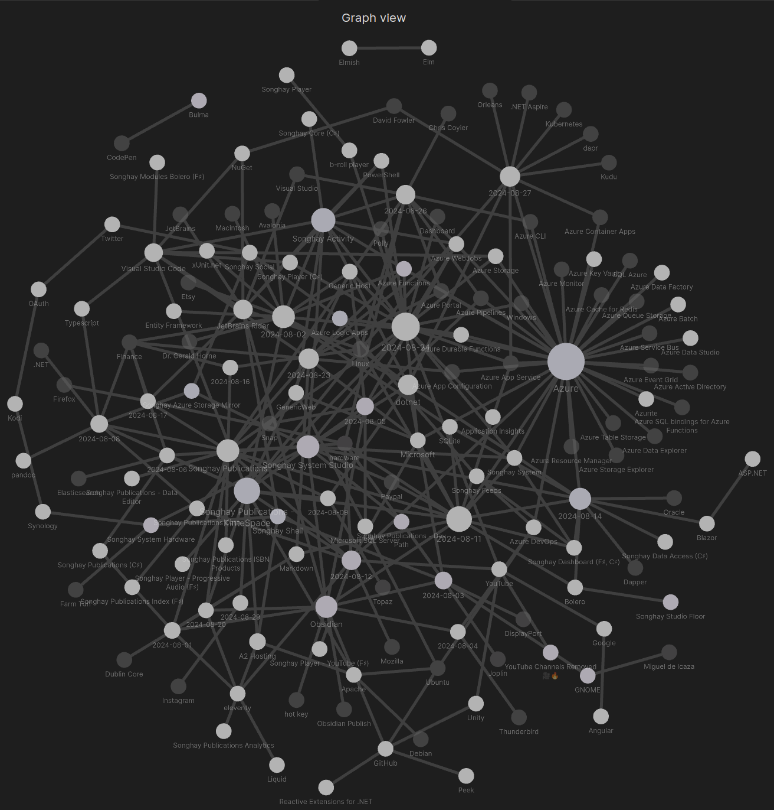
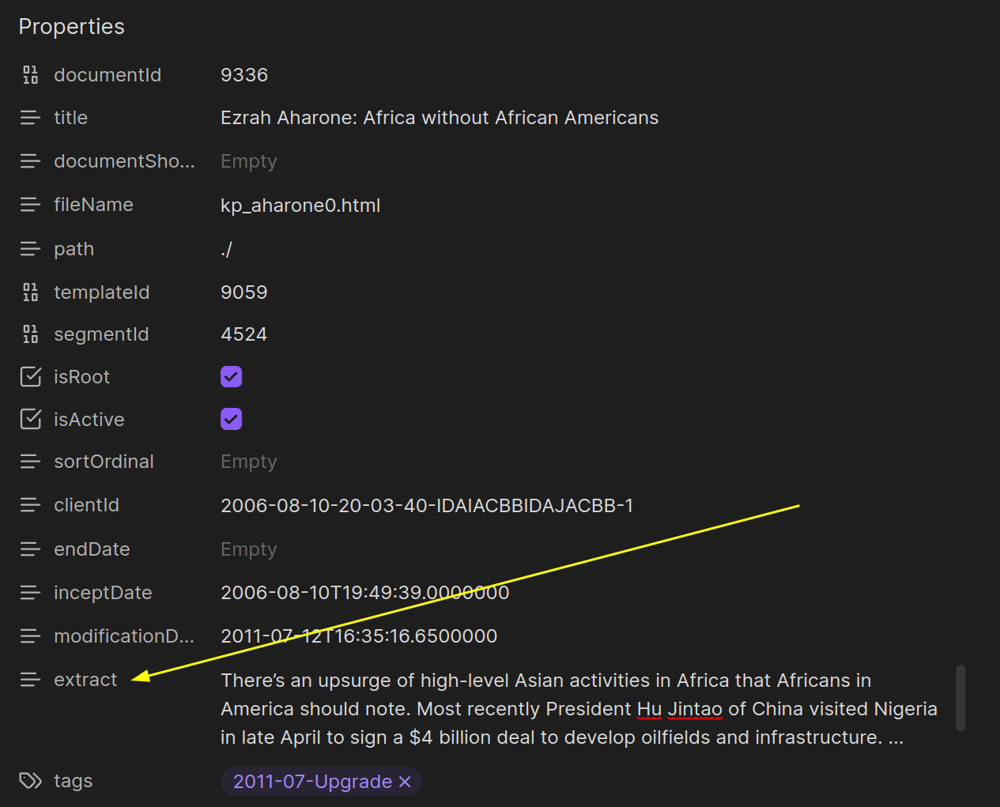
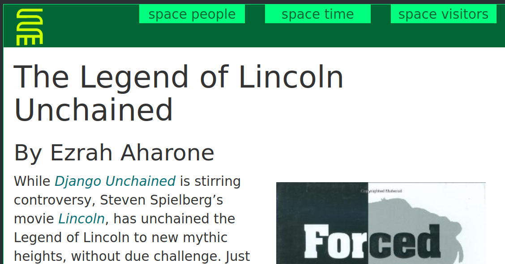
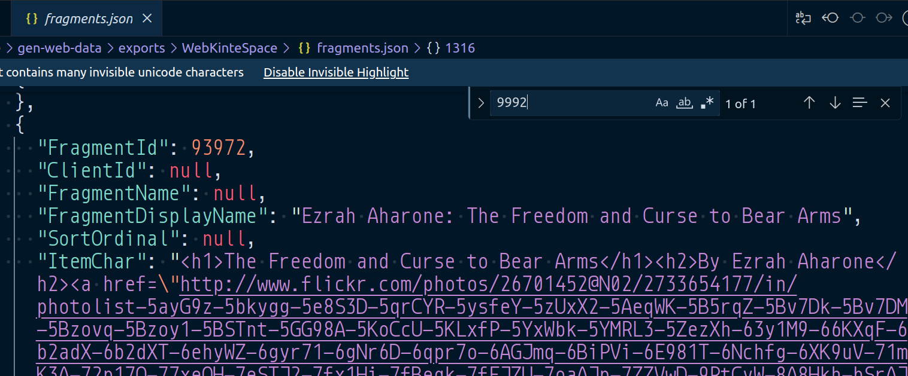

studio status report: 2024-08
month 08 of 2024 was about prepping an Obsidian-based kintespace.com and #day-job Azure success
Last month was about deciding and planning to live with the SQLite flavor of Entity Framework with Obsidian-based word processing and Markdown data management. This month about actually living that life. And, apart from a serious, personal, family issue, this new life is far the more better.
The Obsidian graph of my Studio notes shows the biggest light-colored circles of study that match what this month is about:

- Azure
- Songhay Publications: KinteSpace
- Songhay Activity
These ‘big three’ should appear in the selected notes below:
using div to apply CSS classes
As of this writing, [[Obsidian]] will stop rendering text as [[Markdown]] once an opening HTML tag is encountered:
🍱 This paragraph is treated as raw HTML. This means [[Markdown]] markup is treated as literal.
CSS grid layout
CSS grid layout has the same limitations as those addressed in “[[#using div to apply CSS classes|using div to apply CSS classes]].”
[[Obsidian]] notice blocks and blockquote translation
The div problem exposed in “[[#using div to apply CSS classes|using div to apply CSS classes]]” leads to one solution: use notice blocks 😐 By default, the following [[Markdown]]:
[!important] Hello world!
…will be translated into HTML as:
<blockquote>
<p>[!important] Hello world!</p>
</blockquote>
The bang prefix, [!important], is a declaration that the blockquote element [📖 docs ] is no longer a blockquote element. In this Studio, it should render as:
<div class="important">
<p> Hello world!</p>
</div>
Can [[eleventy]] handle this and/or should this go into [[Songhay Publications (C♯)]]? #to-do
[[Songhay System Studio]]: #day-job disagreements
There are two, ‘official’ technical disagreements between my Studio and the management of the current #day-job:
- do not use ordered tests to develop [[Azure WebJobs]] executables
- prefer the use of [[Microsoft SQL Server]]
LocalDBfiles over JSON snapshots
do not use ordered tests to develop [[Azure WebJobs]] executables
The legitimate concern for advising against this use of ordered tests is because what can happen when an [[Azure Pipelines]] YAML script does a wildcard selection of all tests in a solution. These ordered tests can run and potentially cause havoc when we assume the tests themselves have no defenses against being called based on environment.
One way to address this concern is to have some kind of “scratchpad” location on the desktop, that is separate from the enterprise repo, where a bunch of console apps are hanging out. I dislike this approach because this “scratchpad” location is likely not under source control, making the communication of any bright ideas to even a small team not easy. Additionally, the desktop were all these console apps can be lost which could be a tragedy for those of us with bad luck 🚫🍀
My preference for this use of ordered tests is the closest I have come to “test-driven development” which strongly suggests that these ordered tests should be temporary and wired up to a development environment. These ordered tests are effectively a factory assembly line, helping to build “logic” that will ultimately end up in production code, specifically [[Generic Host|.NET Generic Host]] executables.
prefer the use of [[Microsoft SQL Server]] LocalDB files over JSON snapshots
The preference for “mocking” with LocalDB indicates a Windows-centric heritage is at play. My preference for JSON snapshots is not scalable by default and is simply culturally strange with respect to ‘the state of the art.’
[[Songhay Publications (C♯)]]: more chaos—we’re going to need a PublicationLinesUtility🚜✨😐
I was going to call it MarkdownUtility but that would really confuse it with the already existing MarkdownEntryUtility [🔗 GitHub ]. This concept of Publication Lines is now the smallest unit of the Fragment. Instead of:
- Segment
- Document
- Fragment
We have (for text-based Publications):
- Segment
- Document
- Lines (
Array<string>)- Front Matter lines (which can refer back to Document)
- Markdown Content lines
[!important] The first responsibility of
PublicationLinesUtilityis to capture and centralize the logic used to produce a Document extract.

[[Songhay Publications - KinteSpace|the kinté space]]: FileName kp_aharone21.html is assigned to two different documents 😐👴
When we view http://kintespace.com/kp_aharone21.html we see document 13013, “Ezrah Aharone: The Legend of Lincoln Unchained”:

[!error] The publisher of [[Songhay Publications - KinteSpace|kintespace.com]] (me) effectively used “Ezrah Aharone: The Legend of Lincoln Unchained” to overwrite document
9992, “Ezrah Aharone: The Freedom and Curse to Bear Arms.” According to the [[Songhay Publications Data]], this accident took place on 2015-04-01 11:38:51.533—almost a decade ago👴
The original Fragment for 9992 is preserved in the [[Songhay Azure Storage Mirror]]:

The Fragment for “Ezrah Aharone: The Freedom and Curse to Bear Arms” needs to be ‘appended’ to the end of kp_aharone*.html documents with [[pandoc]] #to-do
[[dotnet|.NET]]: the brutal, expensive, #day-job alternative to logging…
…is throwing an exception with detailed information—the same information that you would log. Sometimes installing logging is not readily available because:
- in a DI situation, injecting
ILoggerin the constructor of some parent class that was not in the container in the first place might break things when ‘this class is used all over the place’ - passing
ILoggerin some parent method to multiple child levels of a harrowing call stack can be tedious—and can be even more frustrating when changing a method signature breaks an interface implementation
So the quick and dirty alternative is something like:
try
{
//...
}
catch
{
throw new DataException($"Hey! {x} casued this!");
}
…where x provides the detail that null-reference or sequence-contains-no-elements (LINQ) exceptions fail to provide. The try-catch block should be very small—preferably one-line.
The desire to wrap a line of code like this also comes from not wanting to build out permutations for handling null. Again, in the world of LINQ, sometimes returning with .Single() instead of .SingleOrDefault() is ‘easier’ to maintain because the violent throwing of an exception with tons of information is faster to detect than the silent killing that can occur from handling null (without logging).
Ideally, this quick and dirty programming should be a last resort to deal with code that should be progressively replaced.
[[Songhay Publications|Publications]]: CSS relative colors
CSS relative colors [📖 docs ] are explained relatively well by [[Mozilla]]:
The CSS colors module defines relative color syntax, which allows a CSS
<color>value to be defined relative to another color. This is a powerful feature that enables easy creation of complements to existing colors — such as lighter, darker, saturated, semi-transparent, or inverted variants — enabling more effective color palette creation.
This video demos what is going on:

Relative colors make so many things easier!
[[eleventy]]: the permalink and “cool URI”
Once we understand what templates are—and how many template ‘languages’ [[eleventy]] supports—then the next important concept to understand is the permalink [📖 docs ].
By default, when the input is a template, thing.njk, the output is _site/thing/index.html which means a “cool URI” [📖 docs ] can be used: ./thing/. One reason why this is “cool”🧊🔗 is because a file extension is missing.
In this Studio, [[Songhay Publications - KinteSpace|the kinté space]] uses the .html file extension. This means that the [[eleventy]]-based pipeline for [[Songhay Publications - KinteSpace|kintespace.com]] has to work against a fundamental concept in [[eleventy]] 😐 Others on the planet 🌏 have had this same problem. The following links provide hints:
- https://github.com/11ty/eleventy/issues/1072#issuecomment-744076816
- https://stackoverflow.com/a/67678809/22944
- https://github.com/11ty/eleventy/issues/1199#issuecomment-633230282
These hints make the following points:
- use the
permalinkproperty in an input-folder JSON file [📖 docs ] - optionally or consecutively, use the
permalinkproperty in YAML front matter on the document level - be aware of the
pagevariable supplied by [[eleventy]] [📖 docs ], specifically thepage.filePathStemproperty - filter functions [📖 docs ] are used to transform the
page.filePathStemproperty - the
_data/eleventyComputed.jsglobal data file [📖 docs ] can be used at the end of the data cascade to calculate thepermalinkproperty
All of these points provide great background information but all we need for the [[Songhay Publications - KinteSpace|kintespace.com]] permalink issue are points 3 and 5 which lead to an 11ty/_data/eleventyComputed.js with the following content:
module.exports = {
permalink: (data) => {
return `${data.page.fileSlug}.html`;
}
};
BTW: the .eleventy.js file for [[Songhay Publications - KinteSpace|kintespace.com]] looks like this:
module.exports = function (config) {
return {
dir: {
input: '.',
output: '../app-staging',
},
htmlTemplateEngine: 'liquid',
markdownTemplateEngine: 'liquid',
templateFormats: ['html', 'md', 'css', 'liquid']
};
};
Modern [[eleventy]] expects most developers to not use an .eleventy.js file at all!
Configuration files are optional.
[[Azure WebJobs]] at the #day-job 🚋✨
Today marks the deployment of a console app as a [[Azure WebJobs|WebJob]] at the #day-job This console app is designed under the [[Generic Host|.NET Generic Host]] conventions from [[Microsoft]]. This is a new product from my Studio!
The [[Generic Host|.NET Generic Host]] console app as a [[Azure WebJobs|WebJob]] serves as a cloud-based replacement for on-premise console apps running on a beefy-but-single server, maintained by on-premise IT staff. This replacement was needed for the #day-job and it has been supplied!
This #day-job situation shows how [[Azure WebJobs]] and [[Azure Functions]] are actually being used:
- [[Azure Functions]] is being used as a serverless Web API.1
- [[Azure WebJobs]] is being used as a back-office workload platform.
1 This is one step above using virtual applications ‘underneath’ a beefy Azure App Service.
The development beyond the current situation includes:
- centralizing app settings with [[Azure App Configuration]]
- coordinating/synchronizing on-premise workloads with [[Azure WebJobs|WebJobs]]
open pull requests on GitHub 🐙🐈
- https://github.com/BryanWilhite/Songhay.HelloWorlds.Activities/pull/14
- https://github.com/BryanWilhite/Songhay.DataAccess/pull/13
- https://github.com/BryanWilhite/dotnet-core/pull/67
sketching out development projects
The current, unfinished public projects on GitHub:
-
replacing the Angular app in
http://kintespace.com/player.htmlwith a Bolero app 🚜🔥 depends on:- completing issue #54: move
Songhay.Publications.DataAccessout of the kinté space repo 🚜 - generating Publication indices from SQLite for
Songhay.Publications.KinteSpace - generating a new repo with proposed name,
Songhay.Modules.Bolero.Index✨🚧 and add a GitHub Project
- completing issue #54: move
The proposed project items:
- switch Studio from Material Design to Bulma 💄 ➡️ 💄✨